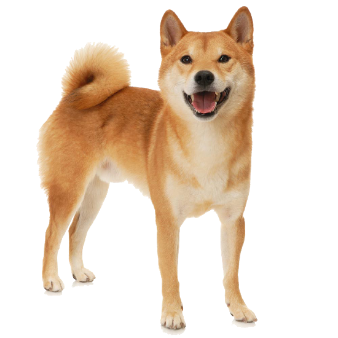

Японская шиба-ину — это бдительная, активная и дружелюбная собака. Она может быть довольно независимой. Часто у нее бывает сильно выражен охотничий инстинкт. Основательная социализация с раннего возраста имеет важное значение, особенно для обучения питомца взаимодействовать с другими собаками. Необычная особенность породы — это характерный визг — подача тонкого голоса в возбужденном или взволнованном состоянии.